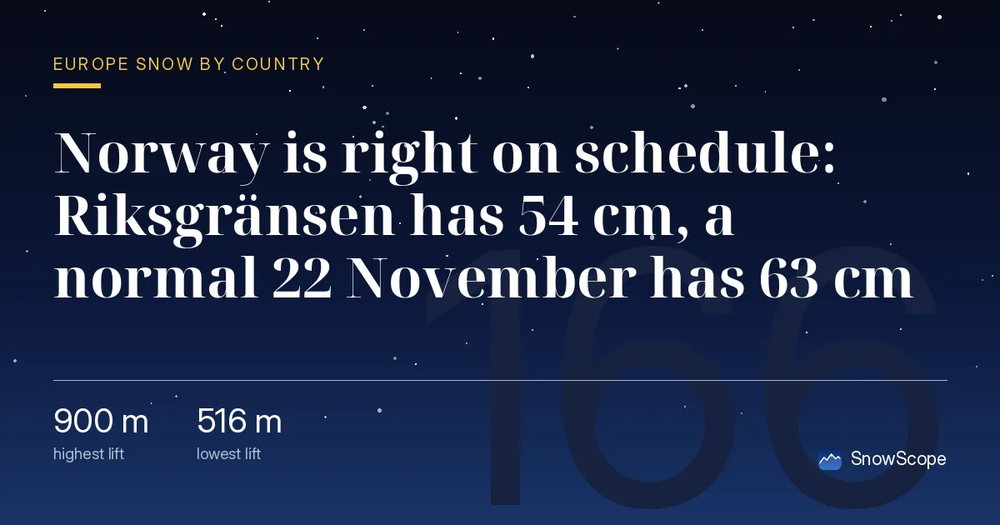

Norway is right on schedule: Riksgränsen has 54 cm, a normal 22 November has 63 cm
Riksgränsen has 54 cm at about 708 m today, close to the 63 cm of a normal 22 November.
See the live snow forecast for Riksgränsen in the SnowScope appSnow depth, powder alerts and the 3D map, free.
Right where it usually is
Neither a gift nor a worry: the season is following its usual path, and the next storms decide how fast the lower runs fill in.
The white area in Norway stands at about 264,260 km² today, little changed from yesterday. Roughly 94 % of the country's mapped mountains and hills are covered.
| Resort | Today | Normal for the date | Share of normal |
|---|---|---|---|
| Riksgränsen | 54 cm | 63 cm | 86 % |
| Sulitjelma Fjellandsby | 49 cm | 55 cm | 89 % |
| Tromsø Alpinpark | 23 cm | 39 cm | 59 % |
| Steilia | 31 cm | 60 cm | 52 % |
| Galdhøpiggen Sommerskisenter | 29 cm | 86 cm | 34 % |

How this start compares
Resort by resort, today against a normal 22 November: Riksgränsen: 54 cm at about 708 m, against 63 cm in a normal year; Sulitjelma Fjellandsby: 49 cm at about 465 m, against 55 cm in a normal year; Tromsø Alpinpark: 23 cm at about 222 m, against 39 cm in a normal year; Steilia: 31 cm at about 455 m, against 60 cm in a normal year.
0 of these 4 resorts are above their usual depth for the date.
These depths are for one height on each mountain, below the top, so they read lower than the upper-slope numbers further down.
In past winters the best snow at Riksgränsen usually came early April / mid-April.

The resorts with the most snow
The deepest snow of the country's resorts is at Riksgränsen: 166 cm.
Close behind: Sulitjelma Fjellandsby (126 cm), Tromsø Alpinpark (96 cm), Steilia (57 cm) and Galdhøpiggen Sommerskisenter (57 cm).
At Riksgränsen: 8 cm of fresh snow over three days, 5 cm more expected by Wednesday 25 November.
At Sulitjelma Fjellandsby: 3 cm of fresh snow over three days, 0 cm more expected by Wednesday 25 November.
150 of the 155 resorts we follow in Norway have snow on their upper slopes.
The rest of the shortlist: Tromsø Alpinpark: 96 cm on top, 12 cm in three days, 8 cm expected; Steilia: 57 cm on top, 6 cm in three days, 5 cm expected; Galdhøpiggen Sommerskisenter: 57 cm on top, 3 cm in three days, 0 cm expected.
Forecast for the week
Over the next three days up to 11 cm is expected, and up to 15 cm over the week.
The snowiest day looks like Sunday 29 November, with up to 11 cm in the snowiest spots.
Further out, days 8 to 14 show up to 32 cm on the snowiest slopes.
The week in numbers
Snow cover in Norway over the last days: 16 November 246,310 km²; 17 November 246,210 km²; 18 November 249,960 km²; 19 November 250,530 km²; 20 November 250,270 km²; 21 November 260,290 km²; 22 November 264,260 km².
Riksgränsen has been the deepest resort every day this week.
Snow depth by height
Snow depth on the ground, height by height: between 0 and 500 m, 9 cm on average, 88 % covered; between 500 and 1,000 m, 19 cm on average, 98 % covered; between 1,000 and 1,500 m, 24 cm on average, 100 % covered; between 1,500 and 2,000 m, 29 cm on average, 100 % covered; between 2,000 and 2,500 m, 38 cm on average, 100 % covered.
Skiing conditions
Fresh snow on top of the base means soft turns on the upper slopes, while the lower runs stay patchy.
Keep an eye on the forecast: the coming snow could change the picture quickly.
Snow on the ground
Compared with 243,470 km² seven days ago, that is 20,790 km² more. Snow lies right down to the lowlands and the coast.
Fresh snow
In the last 72 hours the most new snow, up to 21 cm, fell over the Lyngen Alps, Trollheimen and Jotunheimen.
In the past day, up to 8 cm was added.
About 72,890 km² received at least 5 cm.
The neighbours today
For comparison, the neighbours on the same day: Sweden: 96 % white, deepest Björkliden with 136 cm, up to 6 cm in the week ahead; Finland: 94 % white, deepest Kallin with 22 cm, up to 5 cm in the week ahead.
Planning a day on the snow
Above 0 m the ground is almost fully white (88 % covered), so runs up there have a continuous base.
If you can choose the day, go after Sunday 29 November: the fresh snow then has time to settle and the roads to be cleared.
Tips for skiers
- Early-season snow is thin over rocks: ski the groomed runs first.
- Morning snow is firm after a clear night: wait for the sun on south faces.
- Roads to the higher resorts may need winter tyres or chains.
About these numbers
Resort snow depths are the deepest snow on the resort's upper slopes on the date shown; they are estimates for an area, not a measurement at one point. Forecasts can change. Always read the official avalanche bulletin before going off-piste.
Cite this report
For research, teaching or the press: the numbers and charts are free to reuse under CC BY 4.0 with this citation.
SnowScope (2026), Norway is right on schedule: Riksgränsen has 54 cm, a normal 22 November has 63 cm, https://snowscope.app/blog/en/2026/11/norway-snow-on-schedule-22-november-2026.html, accessed 2026-11-22
SnowScope (Atlas Labs). (2026, November 22). Norway is right on schedule: Riksgränsen has 54 cm, a normal 22 November has 63 cm. SnowScope snow reports. https://snowscope.app/blog/en/2026/11/norway-snow-on-schedule-22-november-2026.html
BibTeX
@misc{snowscope2026norwaysnowonschedule22no,
author = {{SnowScope (Atlas Labs)}},
title = {Norway is right on schedule: Riksgränsen has 54 cm, a normal 22 November has 63 cm},
year = {2026},
month = nov,
howpublished = {\url{https://snowscope.app/blog/en/2026/11/norway-snow-on-schedule-22-november-2026.html}},
note = {Published 2026-11-22 19:35 UTC; accessed 2026-11-22}
}· CC BY 4.0 · Methods, data and tools →
Riksgränsen: snow and temperature by height, this winter vs last (tools) →
Follow Riksgränsen
Free: a message when fresh snow is coming, and the forecast every morning.
More snow reports

Tornik on Zlatibor had up to 39 cm on its upper slopes on 15 November 2026; by Wednesday it had melted. Kopaonik barely turned white. The week day by day and what comes next.

Savin Kuk above Žabljak picked up 22 cm of snow from 13 to 19 November and still has 6 cm today. Kolašin 1450 and 1600 are bare. The week day by day, and the next chances.

Up to 30 cm of snow fell on northern Velebit and Bjelolasica on Friday 13 November 2026. By Tuesday it was gone. Day by day, what the mountains kept, and when snow comes back.